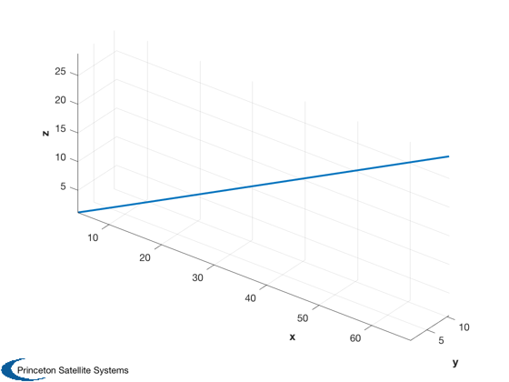
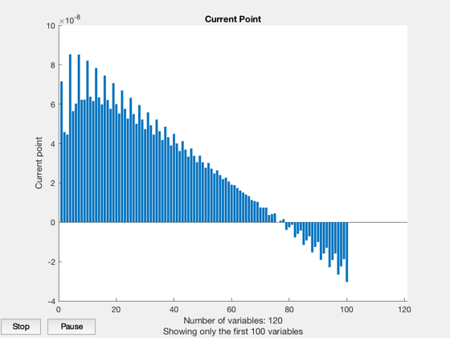
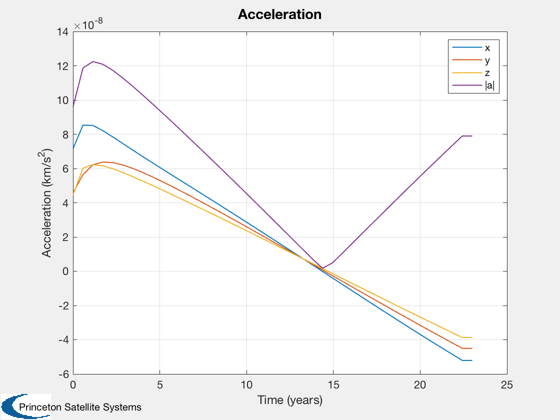
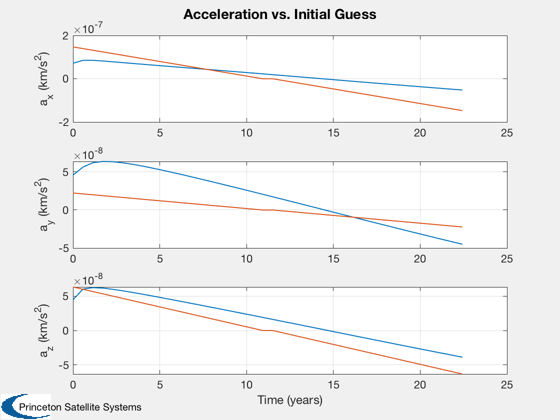
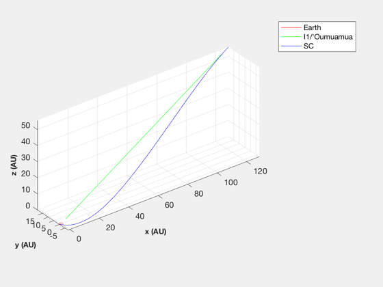
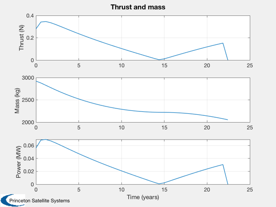

Contents
Set up and run the trajectory simulation for an asteroid intercept.
I1/'Oumuamua is a recent interstellar asteroid that passed through the solar system. This shows that a fusion powered spacecraft could have intercepted the asteroid.
Simulation in the gravity field of the sun.
See also: TrajectoryBetweenTwoPlanets, SpacecraftFromAccel
%-------------------------------------------------------------------------- % Copyright (c) 2018 Princeton Satellite Systems, Inc. % All rights reserved. %-------------------------------------------------------------------------- % Since 2018.1 % 2019.1 Update units of sigma to W/kg from kW/kg %--------------------------------------------------------------------------
I1/'Oumuamua from
jD = 2462576.5;% A.D. 2030-Mar-16 00:00:00.0000 TDB rA = [ 1.008272975334536E+10; 1.579428200546252E+09; 4.311503526924462E+09]; vA = [ 2.428440175149515E+01; 3.623455975379303E+00; 1.063812980138126E+01]; mu = Constant('mu sun'); el0 = RV2El(rA,vA,mu); [r,v] = RVOrbGen(el0,linspace(0,-12*365*86400,200),[],mu); au = Constant('au'); Plot3D(r/au) % Assume we could launch closer to when asteroid is detected (2018) el = RV2El(r(:,end),v(:,end),mu); jD0 = jD - 12*365;
Trajectory
years = 23; % 50, 20 planet1 = 3; planet2.name = 'I1/''Oumuamua'; planet2.el = el; nSteps = 40; s = TrajectoryBetweenTwoPlanets( jD0, planet1, planet2, years, nSteps );
First-order Norm of
Iter F-count f(x) Feasibility optimality step
0 241 3.235156e-06 8.299e+09 4.707e-07
1 482 2.391807e-06 2.174e+08 3.271e+04 3.670e-07
2 723 2.389205e-06 1.314e+07 2.388e+03 3.656e-08
3 964 2.391079e-06 2.593e+05 1.096e+02 2.326e-09
4 1205 2.391098e-06 1.555e+04 1.093e+01 5.836e-11
Optimization stopped because the relative changes in all elements of x are
less than options.StepTolerance = 1.000000e-10, and the relative maximum constraint
violation, 1.874097e-06, is less than options.ConstraintTolerance = 1.000000e-05.
Nonoptimal solution, flag: 2
iterations: 4
funcCount: 1205
constrviolation: 15553
stepsize: 5.8359e-11
algorithm: 'interior-point'
firstorderopt: 10.926
cgiterations: 0
message: '↵Local minimum possible. Constraints satisfied.↵↵fmincon stopped because the size of the current step is less than↵the value of the step size tolerance and constraints are ↵satisfied to within the value of the constraint tolerance.↵↵<stopping criteria details>↵↵Optimization stopped because the relative changes in all elements of x are↵less than options.StepTolerance = 1.000000e-10, and the relative maximum constraint↵violation, 1.874097e-06, is less than options.ConstraintTolerance = 1.000000e-05.↵↵'
Final Equality Constraints
-3659.1
-15553
5617.5
-1.6752e-06
-2.4292e-05
1.098e-05
    Size the spacecraft
sC = struct('uE',120,'sigma',1e3,'fS',0.04,'mP',2000,'eff',0.3,'pMin',1); SpacecraftFromAccel(sC,s); %--------------------------------------
Total mission DV: 43.387953 km/s Max thrust power: 0.069262 MW Total mass: 2921.990909 kg Engine mass: 1 kg Payload mass: 2000 kg Fuel mass: 887 kg Structural mass: 35 kg